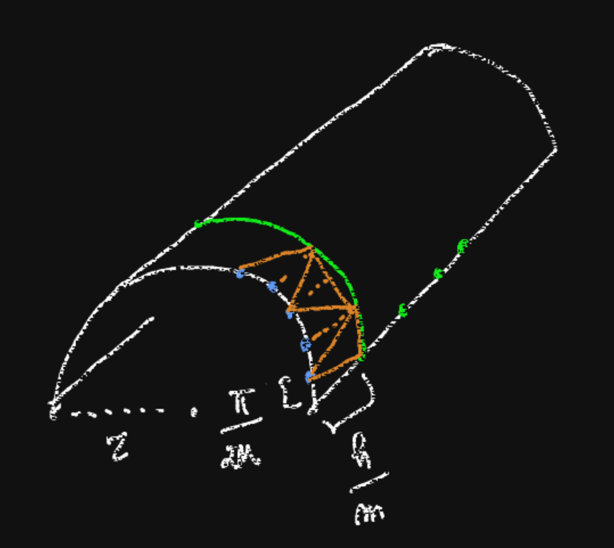
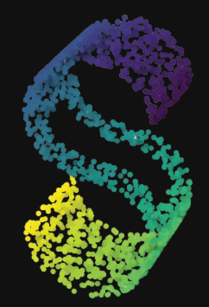

Discretization is the process of reducing the continous geometric information to some combinatorial structure (typically, graphs or multigraphs), which can then be fed to algorithms.
The standard situation is the following: we are interested in some geometric quantity/quality on our manifold and we find a sequence of combinatorial structures with a discrete version of this quantity/quality that "converges" (in a suitable sense) to the object we want to study.
Which structure to employ and how to produce it are aspects that depend on the object of our interest and on the data we can access.
Consider the following approximation of a cylinder with radius $r$ and height $h$ by triangles.
We would like to say that, when the parameters tend to $+\infty$, the area of the triangulation tends to the area of the cylinder. However $$\sup_{m,n} r\sin\frac{\pi}{2n}\left(\frac{h^2}{m^2}+r^2\left(1-\cos\frac{\pi}{2n}\right)^2\right)^{1/2}=+\infty\;.$$ In particular, if $m=n\to+\infty$, then the area tends to $2\pi rh$, but if $m=n^3\to+\infty$, the area diverges.
From the works of Cheeger and Petrunin, in $\mathrm{dim}\geq 3$, we know that approximation by polyhedral complexes (therefore, by spaces with locally constant curvature) is possible only when $M$ obeys strong curvature constraints.
In practice, these constraints are expressed via the global positivity of some curvature-related quantities.
Given a surface in $\R^3$ and random (but quite dense) points on it, we can build the associated graph, via KNN or $\epsilon$-neighbors algorithms, and compute distances between points using Dijkstra algorithm to find the smallest path on the graph.
This is what the Isomap algorithm does as a first step.
However, if the surface containes "holes", Dijkstra algorithm will overestimate the geodesic distance.
Intuitively, the paths will have to go around the hole, which will cause a sensible increase of the length with respect to geodesic distance.
If our points are not evenly distributed, the graph Laplacian and the Laplace-Beltrami operator will differ bt a term of the form $\Delta q/q$, where $q$ is the density of the data points with respect to the volume of $M$.
We have two main structures which can be used to approximate a manifold.
As we already noticed, building a graph from a manifold entails two choices:
how do we sample vertex points?
how do we draw edges?
For the simplicial complexes, the main choice is how to map the standard simplex into $M$ with given vertices.
One possible choice for the simplex map is the following. Let $S\subset\R^{n+1}$ be the standard $n$-simplex; given $p_0,\ldots, p_n\in M$ and $\lambda\in S$, define $$E_{\lambda}:M\to\R\qquad E_\lambda(a)=\sum \lambda^i\mathrm{dist}^2(a,p_i)\;.$$
If $M$ is nice enough, there is a radius such that if $p_0,\ldots, p_n\in B_r(x)$, then $E_\lambda$ has a global minimum in $B_r(x)$.
We define $x:S\to M$ by sending $\lambda$ to the global minimum of $E_\lambda$ in $B_r$. The image $x(S)$ is called Karcher simplex.
A complicated and unclear construction, which however offers good approximations for curvature, functions, connection, metric, ...
Around a point $x\in M$, we can build a local triangulation (simplicial decomposition) by:
The edges and faces of this triangulation will locally be given by geodesics; if the triangulation on the tangent space obeys some requirements, the local triangulation will allow a gluing procedure.
We obtain this way a global triangulation with controlled parameters, which is locally given by geodesics.
This is especially useful in estimating Laplace-Beltrami eigenvalues.
Obviously, a uniform sampling on the parameter space of a parametrization (global or local) for a manifold does not offer any guarantee that the corresponding points on the manifold will be uniformly distributed (or even will present any kind of uniform distribution with regard to distances or volumes).
Sampling directly on the manifold is either impossible (when the manifold is just abstract) or impractical (when the manifold is embedded in a higher dimensional space).
The common solution is to sample from the parameter space with respect to the volume measure induced by the pullback metric.
Rejection algorithm: one approach is to produce overabundant samples in the parameter space (with respect to the uniform distribution) and accept or reject them according to the distribution given by the jacobian determinant of the parametrization map.
Local vs global: quite commonly, sampling locally (with respect to the volume on a ball) and then gluing the results does not coincide with sampling globally; this can be seen by inspecting the associate Markov processes.